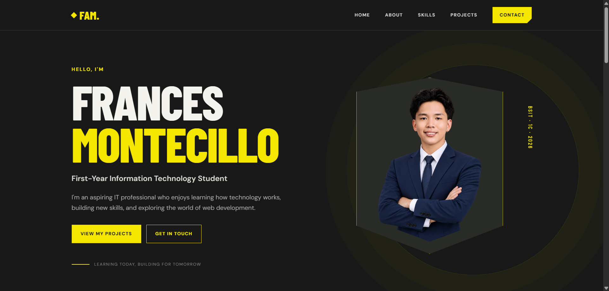
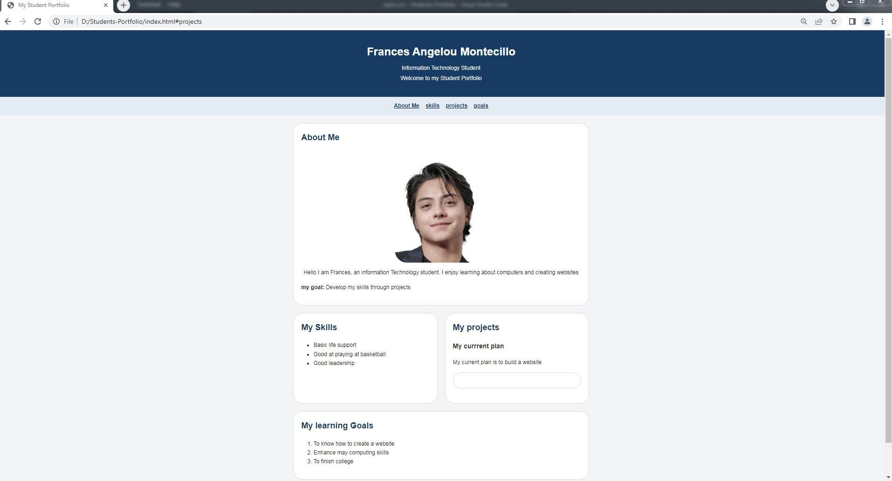

01 Web Portfolio
Another project from my student work that gave me an opportunity to explore ideas, practice my skills, and gain more experience creating digital outputs.
School output · HTML · CSSFirst-Year Information Technology Student
I'm an aspiring IT professional who enjoys learning how technology works, building new skills, and exploring the world of web development.
A little about my studies, the things I enjoy, and the future I'm working toward.
I'm a motivated and hardworking Information Technology student with a growing interest in programming, computer systems, and web development.
I enjoy exploring new ideas, solving problems, and improving my knowledge in the IT field. I can be outgoing or shy depending on the moment, but I stay focused on my goals. I hope to finish my studies, become a skilled IT professional, and build a successful future in the technology industry.
Skills I'm learning and qualities I bring to my studies and projects.
I'm building my foundation in web development while strengthening the habits that help me learn, collaborate, and solve problems.
Currently learning HTML & CSS
A selection of school outputs and practice projects.

Another project from my student work that gave me an opportunity to explore ideas, practice my skills, and gain more experience creating digital outputs.
School output · HTML · CSS
One of my early project outputs, created as part of my learning journey in Information Technology. It represents the skills and ideas I am beginning to put into practice.
Practice project · HTML · CSSHave a question, an opportunity, or want to talk about technology and web development? Feel free to send me an email.
montecillofrances@gmail.com